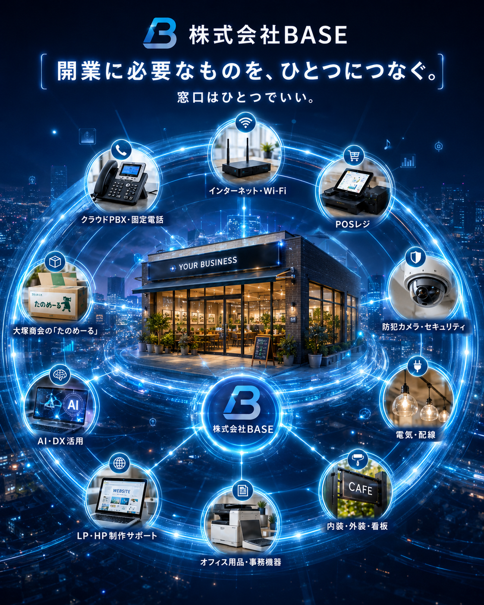

相談を整理する
現状・目的・優先順位を整理し、必要な支援範囲を明確にします。
岩国の事業支援プラットフォーム
通信・IT・セキュリティ・店舗設備・Web・販促・AI活用。
株式会社BASEは「どこに相談すればいい？」を、最初に受け止める総合窓口です。
相談内容がまだ整理できていなくても大丈夫です。
株式会社BASEとは
お客様の課題を整理し、全国のメーカー、地域の施工業者、各分野の専門家、ITサービスを組み合わせて、必要な形をつくります。
現状・目的・優先順位を整理し、必要な支援範囲を明確にします。
メーカー、地域業者、専門家の中から、内容に合う相手へつなぎます。
複数の会社が関わる案件でも、相談窓口を株式会社BASEに一本化できます。
設置や開業で終わらず、運用や改善の相談にも継続して対応します。
主な事業領域
通信・IT支援
防犯・セキュリティ
店舗・オフィス支援
Web・販促・IT・AI活用支援
対応範囲
飲食・小売・美容・福祉・教育・オフィス・工場・倉庫・宿泊施設など、業種や規模に応じて対応します。
一括支援：開設・改善に必要な領域を、ひとつの相談窓口で整理します。
通信・ネットワーク支援
VPN、拠点間ネットワーク、通信品質の見える化、学校や企業のネットワーク診断など、通信環境の課題も整理します。
専門家連携
税務、登記、許認可、補助金、各種手続きなど、専門的な相談が必要な場合は、税理士・司法書士・行政書士など地域の専門家と連携できます。
まずはBASEが内容を伺い、必要に応じて適切な専門家へおつなぎします。
事業の一つとして
事業計画、設備、通信、防犯、販促、施工業者との連携まで、開設工程を整理します。
SCROLL BUILD EXPERIENCE
ロードマップを進むたび、必要な機能が順番に起動します。
開業ロードマップ
計画
誰に、何を、どんな雰囲気で届けるのか。必要な広さ、場所、設備の基準を整理します。
計画が固まっていない段階から、一緒に整理します。
物件・制度
立地、電気容量、回線工事、看板、駐車場、工事可否に加え、活用できる可能性のある補助金も確認します。
制度確認、必要書類整理、入力操作支援、専門家への接続を行います。
空間づくり
動線、レジ位置、照明、外観、看板に加え、空間に合った一点物のオーダー家具も検討できます。
地域の施工業者や家具職人と連携し、まとめて調整します。
インフラ
コンセント、照明、LAN、Wi-Fi、電話、レジ、防犯カメラの位置まで先に設計します。
電気・通信・機器配置を一つの設計として考えます。
運営
POSレジ、キャッシュレス、勤怠、経費精算、PC、複合機など、日々の運営に必要な仕組みを整えます。
業種と規模に合った環境を、必要以上に複雑にせずご提案します。
防犯
防犯カメラ、警備、入退室、アカウント、バックアップまで、店舗と情報を守る仕組みを整えます。
簡易診断から始め、必要な対策だけを整理します。
販促設計
LP・HP、Googleマップ、SNS、LINE、チラシ、ポスター、ショップカードを組み合わせます。
オンラインと印刷物を統合し、問い合わせ・来店・認知拡大につながる導線を設計します。
スタート
開業後も、通信、POS、防犯、業務効率化、AI活用、集客改善まで、相談窓口として支援します。
準備完了
すべてがつながる
開業や事業運営に必要なものを、株式会社BASEが一つの窓口につなぎます。

既存事業者の皆さまへ
今ある事業の改善や見直しも、BASEの仕事です。
LINE公式アカウント
相談、資料閲覧、各サービスへの入口をLINE公式アカウントにまとめます。
まずはご相談ください
相談内容がまだ整理できていなくても大丈夫です。
株式会社BASE
〒741-0071 山口県岩国市牛野谷町2-13-23
メール：y.yoshimura@sky.icn-tv.ne.jp
許可・資格を要する工事は、必要な許可・資格を有する協力事業者が契約・施工します。株式会社BASEは相談内容の整理、サービス提案、関係事業者との連絡調整を行います。